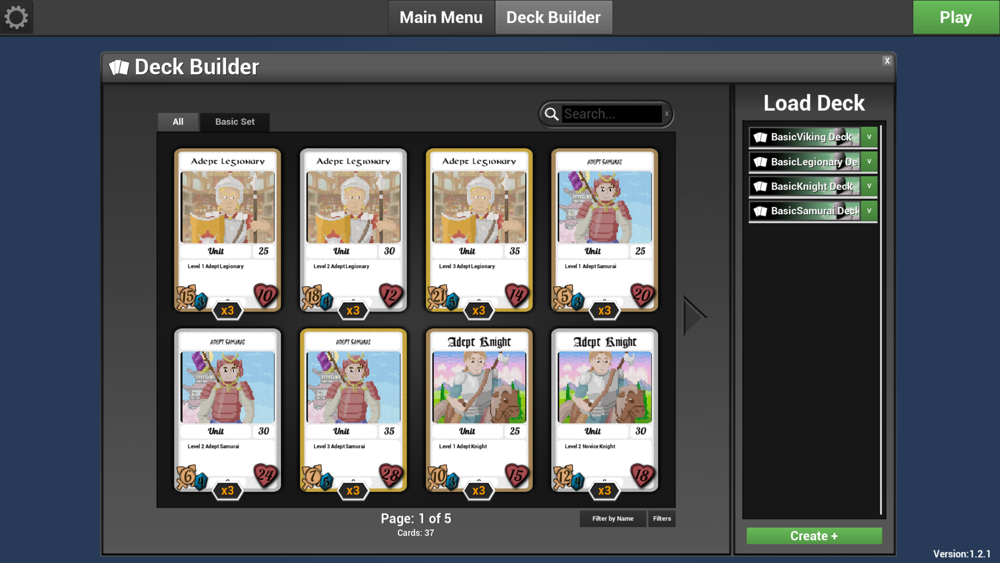

Cardinal Sin
Cardinal Sin is a card game about great historical warriors from different cultures, made in Unreal using the CCG Toolkit. This project was made as part of a university course, in a team of four developers. The project was massively supported with the usage of CCG Toolkit for some basic functionalities, because of each team members limited time due to us being in our senior year. Thus, the codes for this project was half modified CCG Toolkit code, and half newly added code.

As the main programmer, I am responsible for the majority of the code concerning the gameplay, UI and UX. Some of the main mechanics include the positional combat, where the position of the cards dictate which enemy cards they can attack, the alternate winning condition and its related code, and the abilities for the cards.
I also contributed alot for the design of the game, including the positional combat mentioned above, as well as adding on to team member's ideas. The game design went through many iterations, with changes made through analyzing and discussing playtests' feedbacks.
Download the gamehere